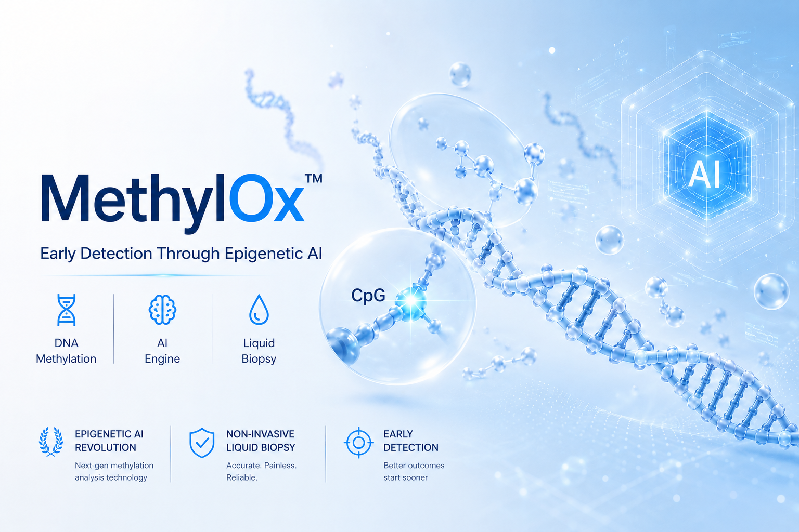

Identificación de firmas epigenéticas del ctDNA mediante vectores probabilísticos y cooperatividad multiplex en entornos cerrados.

Unificación de datos ómicos en visualizaciones dinámicas de Gauss listas para el consultorio.
Los esquemas tradicionales exigen inversiones masivas en equipamiento local, limitando el acceso periférico a herramientas de resolución molecular temprana.
Aislamiento logístico completo. El centro médico interactúa con las campanas probabilísticas de forma remota, eliminando cualquier requerimiento de capital operativo.
Trazabilidad automatizada desde la captación analítica hasta el dictamen en pantalla.
Indexación de la muestra biológica periférica y envío directo hacia el nodo central.
Procesamiento automatizado mediante el panel maestro de 15 sondas de alta resolución.
Acceso cifrado instantáneo para evaluar vectores clínicos y exportar reportes legibles.
Estructura modular diseñada bajo las directrices del secreto industrial de-riesgo.
Modelado dinámico interactivo que posiciona el vector del paciente actual frente a las densidades poblacionales de referencia internacional.
Separación de repositorios institucionales mediante llaves de acceso cifradas individuales y archivos cerrados de base de datos.
Generación automatizada de reportes formales en tiempo de ejecución protegidos y compatibles con lectores externos estandarizados.
Métricas integradas en el flujo operativo para certificar conversión química, profundidad analítica y pureza estructural de la muestra.
Explore la capacidad de respuesta y validación del receptor ómico en tiempo de ejecución.
Drag and drop or click to browse (.csv, .xlsx)
Valide las capacidades de la interfaz SaaS o explore los módulos autorizados utilizando sus credenciales institucionales cifradas.